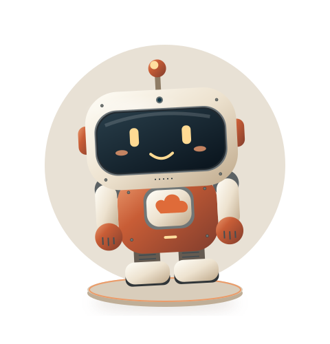
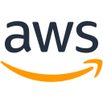
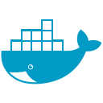
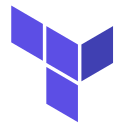
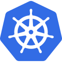

AWS & Azure
Application, data, and AI infrastructure.
HELLO, I’M GOKULAKANNAN — YOU CAN CALL ME GOKUL.
I build the infrastructure behind SaaS, IoT, and AI applications. Thoughtful automation. Reliable releases. Cloud costs that make sense.

MEET GOKUL-BOT YOUR CLOUD COMPANIONInteractive 3D needs a WebGL-enabled browser.
MY EVERYDAY TOOLKIT

AWS
Docker
Terraform
KubernetesTrichy, Tamil Nadu, India
EXPERIENCENearly 4 years · January 2023–present
I’m Gokul, a Cloud & DevOps Engineer who likes solving the problems between an idea and a dependable production system.
At B-Sec Technologies, I design and operate AWS infrastructure for agricultural IoT, AI analysis, and supplier platforms. My work spans cloud architecture, Docker, CI/CD, Python automation, and selected Terraform provisioning, with additional deployment experience on Azure.
I care about practical improvements: a release that takes minutes instead of hours, a smaller cloud bill, or an automated workflow that gives a team its time back.
Health checks, useful logs, secure access, and a recovery path before the next release.
Deployment pipelines, scheduled reports, file operations, and everyday cloud tasks.
Right-size infrastructure and optimize storage before adding more resources.
Built through production work.
Chosen to solve real problems.
Application, data, and AI infrastructure.
Repeatable builds. Health-checked releases.
Less manual work across environments.
Restricted access. Clear operational signals.
Selected platforms delivered at B-Sec Technologies. Visuals are simplified representations of my work.
Right-sizing and automated schedules for non-production environments.
Deployment automation across application and AI/ML services.
Schema optimization, data archival, and growth-trend analysis.
Figures reflect the achievements documented in my resume; cost and release-time reductions are approximate.
From electronics and communication
to the systems behind real products.
Design and operate cloud infrastructure across HarvestEye, Twellr.ai, and the Supplier Portal. Build CI/CD workflows, container deployments, Python automation, and security controls across AWS and Azure environments.
A foundation in engineering, problem-solving, and understanding how connected systems work.
Looking for someone to simplify your cloud,
improve your releases, or build what’s next?
Let’s talk.